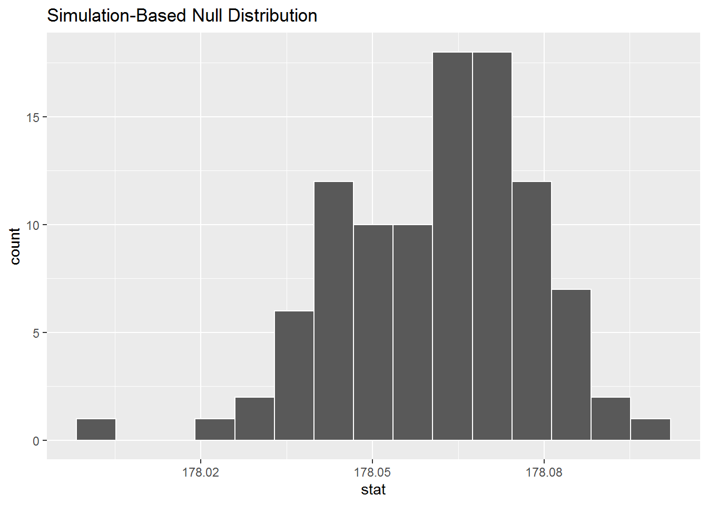
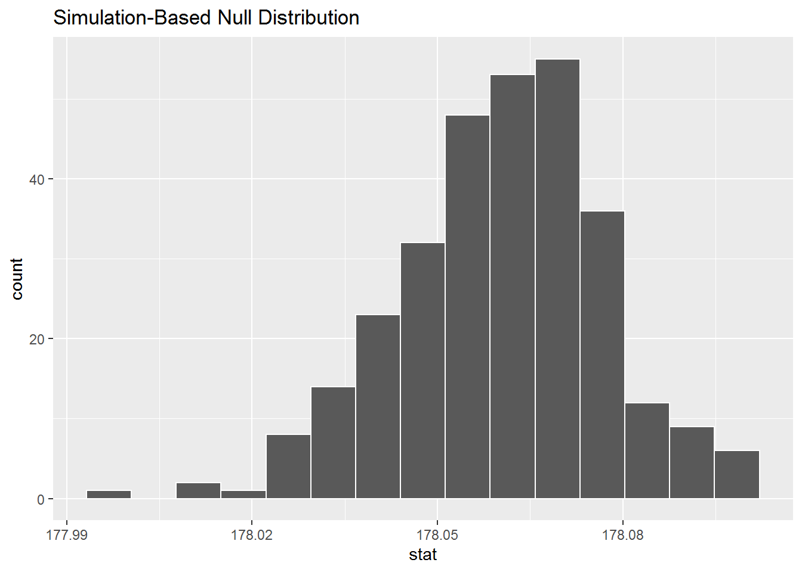
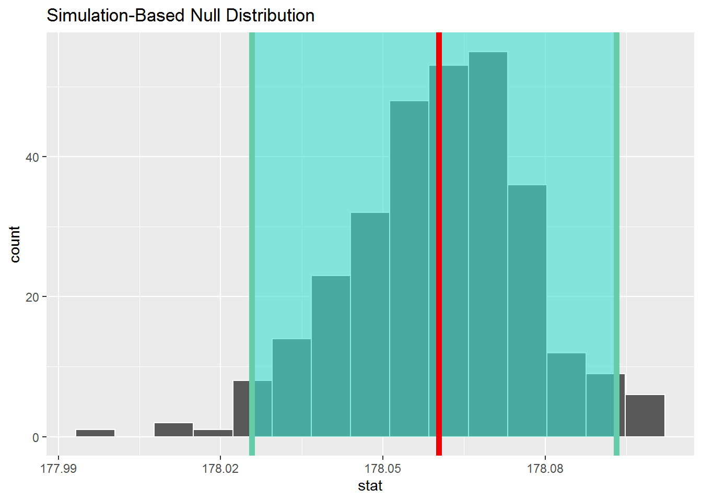
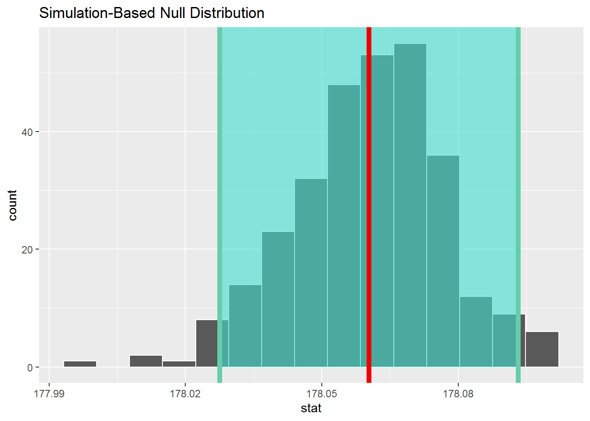

Math 530/630 CM 4.2 - lab
Bootstrapping and Confidence Intervals
1 Estimation of US male height
Suppose we want to estimate the average height of men in the U.S.
We can use data from the BRFSS (2016):
“The Behavioral Risk Factor Surveillance System (BRFSS) is the nation’s premier system of health-related telephone surveys that collect state data about U.S. residents regarding their health-related risk behaviors, chronic health conditions, and use of preventive services.”
library(tidyverse)
library(skimr)
library(haven)
library(infer)# the data set is available on the course website, under References Plus
male_heights <- read_csv(here::here("data", "male_heights.csv"))## Parsed with column specification:
## cols(
## HTM4 = col_double(),
## id_num = col_double()
## )1.1 EDA
Height is in self-reported height in centimeters.
- How many unique heights are there?
- How many men were 103 cm?
- How about 231 cm?
male_heights %>%
count(HTM4) %>%
arrange(desc(HTM4))## # A tibble: 88 x 2
## HTM4 n
## <dbl> <int>
## 1 231 1
## 2 229 3
## 3 226 2
## 4 224 1
## 5 221 3
## 6 218 4
## 7 216 6
## 8 213 15
## 9 211 27
## 10 208 42
## # ... with 78 more rows1.2 Estimate
What is the mean and sd of male heights?
library(skimr)
skim(male_heights)## Skim summary statistics
## n obs: 204509
## n variables: 2
##
## -- Variable type:numeric -------------------------------------------------------------------------------------------------------
## variable missing complete n mean sd p0 p25 p50 p75
## HTM4 0 204509 204509 178.06 7.79 91 173 178 183
## id_num 0 204509 204509 1e+05 59036.81 1 51128 1e+05 153382
## p100 hist
## 231 <U+2581><U+2581><U+2581><U+2581><U+2587><U+2587><U+2581><U+2581>
## 2e+05 <U+2587><U+2587><U+2587><U+2587><U+2587><U+2587><U+2587><U+2587>1.3 Quantify precision
At this point we have an estimate of the average adult male height. We’d like to know how accurate this estimate is, and how precise. In the context of estimation, these words have a technical distinction:
“Given a set of data points from repeated measurements of the same quantity, the set can be said to be precise if the values are close to each other, while the set can be said to be accurate if their average is close to the true value of the quantity being measured.”
Usually accuracy is what we really care about, but it’s hard to measure accuracy unless you know the true value. And if you knew the true value, you wouldn’t have to estimate it in the first place.
Quantifying precision is not as useful, but it is much easier. Here’s one way to do it:
Use the data you have to make a model of the population.
Use the model to simulate the random data collection process.
Use the simulated data to compute an estimate.
Repeat steps 1-3 and collect the results.
To model the population, we’ll use resampling; that is, we will treat the observed measurements as if they were taken from the entire population, and we will draw random samples from them.
We sample with replacement, which means that some measurements might be chosen more than once, and some might not be chosen at all. (If we sample without replacement, the resampled data is always identical to the original, so that’s no good.) let’s do 3 resamplings and comare them.
# First, get the n (number of observations)
males_n <- male_heights %>%
tally() %>%
pull()set.seed(2051)
mh_resample1 <- male_heights %>%
sample_n(size = males_n, replace = TRUE)In mh_resample1:
- How many men were 103 cm?
- How about 231 cm?
- Try setting seed to
1903and createmh_resample2, answer the two questions again. - Try setting seed to
1701and createmh_resample3, answer the two questions again.
mh_resample1 %>%
count(HTM4 == 103)## # A tibble: 2 x 2
## `HTM4 == 103` n
## <lgl> <int>
## 1 FALSE 204508
## 2 TRUE 1mh_resample1 %>%
count(HTM4 == 231)## # A tibble: 2 x 2
## `HTM4 == 231` n
## <lgl> <int>
## 1 FALSE 204508
## 2 TRUE 1set.seed(1903)
mh_resample2 <- male_heights %>%
sample_n(size = males_n, replace = TRUE)mh_resample2 %>%
count(HTM4 == 103)## # A tibble: 2 x 2
## `HTM4 == 103` n
## <lgl> <int>
## 1 FALSE 204508
## 2 TRUE 1mh_resample2 %>%
count(HTM4 == 231)## # A tibble: 2 x 2
## `HTM4 == 231` n
## <lgl> <int>
## 1 FALSE 204508
## 2 TRUE 1set.seed(1701)
mh_resample3 <- male_heights %>%
sample_n(size = males_n, replace = TRUE)mh_resample3 %>%
count(HTM4 == 103)## # A tibble: 2 x 2
## `HTM4 == 103` n
## <lgl> <int>
## 1 FALSE 204508
## 2 TRUE 1mh_resample3 %>%
count(HTM4 == 231)## # A tibble: 2 x 2
## `HTM4 == 231` n
## <lgl> <int>
## 1 FALSE 204507
## 2 TRUE 2fix_windows_histograms() # If you're using windows, allows the histograms to show in the HTML output## This function will change your system locale. It may have other unintended effects.## Continue? (Y/n)skim(mh_resample1, HTM4)## Skim summary statistics
## n obs: 204509
## n variables: 2
##
## -- Variable type:numeric -------------------------------------------------------------------------------------------------------
## variable missing complete n mean sd p0 p25 p50 p75 p100 hist
## HTM4 0 204509 204509 178.05 7.8 94 173 178 183 231 ▁▁▁▁▇▇▁▁skim(mh_resample2, HTM4)## Skim summary statistics
## n obs: 204509
## n variables: 2
##
## -- Variable type:numeric -------------------------------------------------------------------------------------------------------
## variable missing complete n mean sd p0 p25 p50 p75 p100 hist
## HTM4 0 204509 204509 178.07 7.78 91 173 178 183 231 ▁▁▁▁▇▇▁▁skim(mh_resample3, HTM4)## Skim summary statistics
## n obs: 204509
## n variables: 2
##
## -- Variable type:numeric -------------------------------------------------------------------------------------------------------
## variable missing complete n mean sd p0 p25 p50 p75 p100 hist
## HTM4 0 204509 204509 178.07 7.8 91 173 178 183 231 ▁▁▁▁▇▇▁▁# Make some space
remove(mh_resample1,mh_resample2,mh_resample3)If we wanted to use infer instead to generate a SINGLE replicate or resample, we would use:
set.seed(1701)
mh_resample3 <- male_heights %>%
specify(response = HTM4) %>%
generate(reps = 1, type = "bootstrap")Now that we know how to create a single resample, let’s generate 100 resamples, calculate the mean for each resample, and make a histogram to show the distribution of all the calculated means.
set.seed(1701)
mh_means100 <- male_heights %>%
specify(response = HTM4) %>%
generate(reps = 100, type = "bootstrap") %>%
calculate(stat = "mean")
mh_means100 %>%
visualize()
# Removing as I go to make sure I don't run out of memory
rm(mh_means100)And 300…
set.seed(1701)
mh_means300 <- male_heights %>%
specify(response = HTM4) %>%
generate(reps = 300, type = "bootstrap") %>%
calculate(stat = "mean")
mh_means300 %>%
visualize()
Feel free to try more! Warning you might run run out of memory :0
1.4 SEM
The width of the above distributions show how much the means vary from one resampling to the next.
We can quantify this variability by computing the standard error (e.g., the standard deviation of the sampling distribution), in this case the standard error of the mean (SEM).
options(pillar.sigfig = 6) # Sets the number of significant digits that will display
mh_means300 %>%
summarize(mean_of_means = mean(stat),
sd_of_means = sd(stat)) # this is the SE!## # A tibble: 1 x 2
## mean_of_means sd_of_means
## <dbl> <dbl>
## 1 178.060 0.0167367Question: Why is the standard error so small?
Question: Can you estimate the SEM using the standard deviations for the first few resamples?
2 Confidence Intervals
We can also summarize the sampling distribution with a “confidence interval”, which is a range that contains a specified fraction, like 95% (the confidence level), of the values in mh_means. Alternatively, we can ask for the confidence interval calculated using the standard error.
The central 95% confidence interval is between the 2.5th and 97.5th percentiles of the sampling distribution.
# get_ci() default "confidence level" is 0.95
# Percentile method
(percentile_ci <- mh_means300 %>%
get_ci())## # A tibble: 1 x 2
## `2.5%` `97.5%`
## <dbl> <dbl>
## 1 178.026 178.093# SE method. This needs the point_estimate passed in - here that's the mean of means
mean_of_means <- mh_means300 %>%
summarize (mean = mean(stat))
(ci_se <- mh_means300 %>%
get_ci(type = "se", point_estimate = mean_of_means))## # A tibble: 1 x 2
## lower upper
## <dbl> <dbl>
## 1 178.028 178.093Question: Why are they (ever so slightly) different?
Question: How would you recreate these two calculations by “hand” with the help of R?
2.1 Visualizing the CI
You can also use infer to plot a histogram and shade the 95% confidence interval. Here’s the confidence intervals calculated using both the percentile and SE methods.
means_plot <- mh_means300 %>%
visualize()
means_plot +
shade_confidence_interval(percentile_ci) +
shade_p_value(obs_stat = mean_of_means, direction = NULL)
Here, 95% of the data stored in the stat variable in mh_means falls between the two endpoints with 2.5% to the left outside of the shading and 2.5% to the right outside of the shading. The cut-off points that provide our confidence interval are shown with the darker lines.
means_plot +
shade_confidence_interval(ci_se) +
shade_p_value(obs_stat = mean_of_means, direction = NULL)
Here, the end points are calculated using the SEM.
Question: What are the conditions for using the SE method?
2.2 Amd more…
Think about: How would the above calculations change if we used a subset of the data?
Let’s try it using a subset with 2000 data elements, but resample 1000 times.
set.seed(1701)
mh_means_samp <- sample_n(male_heights, 2000) %>%
specify(response = HTM4) %>%
generate(reps = 1000, type = "bootstrap") %>%
calculate(stat = "mean")
mh_means_samp %>%
summarize(mean_of_means = mean(stat),
sd_of_means = sd(stat)) # this is the SE!## # A tibble: 1 x 2
## mean_of_means sd_of_means
## <dbl> <dbl>
## 1 178.256 0.189102# Percentile method
(percentile_ci <- mh_means_samp %>%
get_ci())## # A tibble: 1 x 2
## `2.5%` `97.5%`
## <dbl> <dbl>
## 1 177.883 178.618mean_means_samp <- mh_means_samp %>%
summarize(mean(stat))
means_plot <- mh_means_samp %>%
visualize()
means_plot +
shade_confidence_interval(percentile_ci) +
shade_p_value(obs_stat = mean_means_samp, direction = NULL) Question: What did we gain? What did we lose?
Question: What did we gain? What did we lose?